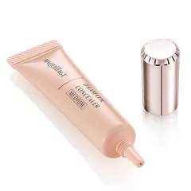

白く浮く・ふくらみがくっきりする人（影の線にだけ置く）

マキアージュ
ドラマティックコンシーラー ミディアム
8g・SPF30 PA+++・無香料
¥1697税込・出典掲載価格
選び方と声
- 選ぶ条件：明るい色で目の下が白く浮く人。上を向くと影が薄くなる（たるみの影の）人
- 明るすぎないミディアムを、目頭の下から黒目の下までのへこみにパール粒くらい（資生堂の解説の手順）
- ごく少量で隠れる、皮膚が薄くてもゴワつかなかった、ライトだと明るすぎてクマがグレーに浮いた、という声
気になる声気になる点：マスクにつく、リキッドほどはのびない、という声。Amazonは公式ではない出品者のみだったため楽天にしています
販売価格・容量・送料はリンク先でご確認ください